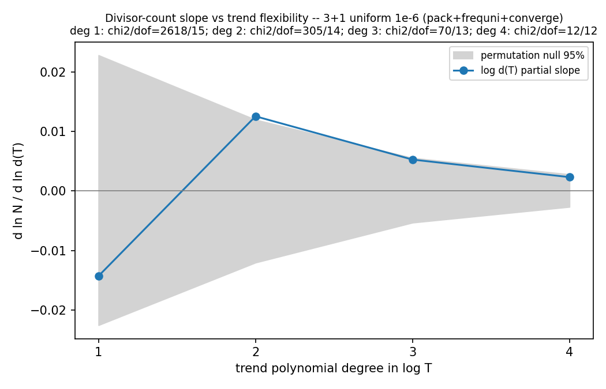

Arithmetic ripples in N(T): does the ℤ/Tℤ lattice's number theory leak into the jam count? No — the model is archimedean at the sub-percent level
The jam count follows the smooth law N ~ T2.32. But the
comoving time lattice is ℤ/Tℤ, and closed resonances on it
care about divisibility — so if the packing felt the lattice's
arithmetic, the residuals around the smooth law should correlate with
arithmetic functions of T: divisor count d(T), distinct prime factors
ω(T), Ω(T), largest prime factor, abundance
σ(T)/T. Pure noise instead means the profinite structure is
irrelevant and only the archimedean size of T matters. New
analysis/analyze_arithmetic_ripples.py runs this test on
seven ensembles (never pooling across sampler eras: freq3d's smart-era
counts run 30–40% above the uniform ensemble at the same T —
the campaign-hygiene reason pooling was verified store-by-store first).
Per ensemble: WLS poly(log T) trend fit, an excess-ripple
χ² against the seed-noise floor, a lag-1 autocorrelation
separating smooth leftovers from arithmetic spikiness, and a
Frisch–Waugh–Lovell partial regression of the residuals on
each covariate with permutation p-values (the naive regression
attenuates a planted signal ~5× because the trend fit absorbs the
covariate's smooth component — caught by the planted-signal test
in tests/test_arithmetic_ripples.py).
![Seven rows of two panels, one row per ensemble (3+1 and 2+1, uniform and smart samplers, cutoffs 1e-6 to 1e-8). Left panels: percent residuals in log N versus T with seed-noise error bars — the primary 3+1 ensemble shows a smooth W-shaped wiggle of order 1 percent; the 2+1 panels are flat within errors. Right panels: the same residuals against detrended log divisor count with a dashed partial-regression line — slopes scatter around zero, permutation p-values from 0.03 to 0.98 with no consistent sign across ensembles.](arithmetic_ripples.png)

- No arithmetic covariate correlates with the residuals anywhere. Across 7 ensembles × 6 covariates the permutation p-values are uniform; the two p ≈ 0.03 entries (log d(T) in the primary 3+1 ensemble, T/20-primality at 1e-7) are the ~2 hits expected by chance in 42 tests, fail to replicate across cutoffs on the same T grid, and are sign-inconsistent between ensembles.
- The per-T structure that does exist is smooth, not arithmetic. The primary ensemble beats its seed-noise floor (rms 0.94% vs 0.20% at degree 2) but with lag-1 autocorrelation +0.46 (p = 0.001) — adjacent T alike, the signature of the known slow approach to the asymptotic power law (plus possible small inter-store steps at the pack/converge boundary), the opposite of divisor spikiness. A degree-4 trend absorbs it entirely: χ²/dof = 12.4/12 (p = 0.41), pure seed noise underneath.
- Bound: any divisor-count modulation of N is |d ln N / d ln d(T)| ≲ 0.005 — under ~0.7% across the full d(T) = 6 → 24 range of the ladder, while N itself spans a factor ~2600. The packing reads T as a length, not as an integer.
- Scope caveat, printed by the tool: every stored T is a multiple of 20, so the sample contains no prime T — the sharpest version of the question (prime vs highly composite T) is untestable on existing data. T/20-primality is the nearest analog and is null. A cheap decisive campaign would interleave prime T (127, 149, 173, …) with highly-composite neighbors (120, 144, 168, …) at matched sizes.
Both dimensions tell the same story (2+1 residuals are consistent with seed noise outright at 1e-6/1e-7, so there is nothing to attribute at all): the jam law is purely archimedean at current precision, and the ℤ/Tℤ lattice's prime structure does not leak into the physics.